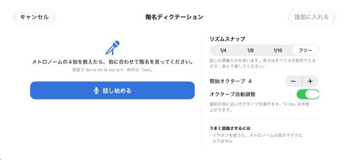
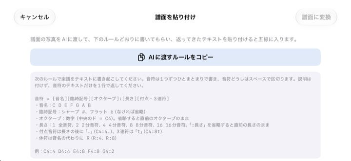

頭の中で数えるより、
耳で確かめよう
迷う2小節を五線に書き写して再生をタップ。1小節のカウントインのあと、メトロノームに合わせてリズムと音程そのままに鳴らします。
すべての機能が無料。iPhoneとiPadに対応しています。

書いて、聴いてみよう
五線を押したまま上下に動かすと音が変わり、指を離すと音符が入ります。再生を押すと1小節のカウントインのあとに演奏します。音が出るので音量にご注意ください。
拍を数えているうちに、わからなくなっていませんか？
付点8分のあとに16分、すぐ隣に3連符。膝を叩いて数えているうちに、いつの間にかずれてしまいます。合唱練習の前の晩など、手元にピアノがないことも多いはず。StaffSingerなら、その2小節を五線に書き写すだけで正確なリズムと音程で聴けます。
リズムも音程も、書いたとおりに
1小節のカウントインのあと、メトロノームのクリックに合わせて演奏し、鳴っている音符をオレンジ色で示します。テンポは40〜200 BPM、拍子は4/4、3/4、2/4、6/8、2/2、3/8から選べます。
同じ拍に音を重ねれば和音として同時に鳴り、声部は3つまで書き分けられます。ト音記号、ハ音記号（アルト）、ヘ音記号と調号も切り替えられます。

階名を声に出せば音符になる
メトロノームの4拍のあと、拍に合わせて do re mi と声に出すと五線に入ります。拍どおりに言えば、4分・8分・16分単位で長さまで取れます。休符は rest と言います。
階名は英語の発音で言ってください。音声は端末の中だけで認識され、保存されません。

譜面の写真はAIに、結果は貼り付けで
AIに渡すルールをコピー をタップし、譜面の写真と一緒にAIに渡して、返ってきたテキストを貼り付ければ五線が埋まります。書式は下の表のとおりです。
紙の譜面を撮って画面に表示し、見ながら書き写すこともできます。

始めるのは3ステップ
- 1
迷う小節を選ぶ
アプリを開くと空の2小節の五線が出ます。
- 2
音符を書く
五線を押すか、ピアノの鍵盤で入力します。
- 3
再生をタップ
カウントインのあと、メトロノームに合わせて鳴ります。
テキストで貼り付けるときの書式
- C4:4
- オクターブ4のド、4分音符（中央のドがC4）
- D:8
- オクターブを省くと直前のオクターブのまま
- F#4:8 · Bb4:4
- シャープは #、フラットは b
- E4
- 「:長さ」を省くと直前の長さのまま
- :1 · :2 · :4 · :8 · :16
- 全音符、2分、4分、8分、16分音符
- C4:4.
- 付点音符
- C4:8t
- 3連符
- R:4 · R:8
- 休符
アプリの「AIに渡すルールをコピー」で、この書式の説明がそのままコピーされます。音符と音符の間はスペースで区切ります。
すべての機能が無料です
無料
- 五線入力と2オクターブの鍵盤
- カウントインとメトロノーム付きの再生
- 和音と3つの声部
- 調号と3種類の音部記号
- 階名の音声入力
- テキスト貼り付けと参考写真
開発者を応援する
- 設定から少額のチップを送れます
- チップを送っても機能は増えません
サブスクリプションではなく、送るたびに1回きりの支払いです。
広告もアカウント登録もありません。
よくある質問
音符はどう入力しますか？
まずツールバーで音価を選び、五線の好きな高さを押します。押している間その音が鳴り、指を離すと音符が入ります。鍵盤ボタンをタップすれば、2オクターブのピアノ鍵盤からも入力できます。
和音はどう作りますか？
ツールバーの「和音」ボタンをオンにしたまま音を入れると、選んだ音の上に重なって同時に鳴ります。
入れた音を直したいです。
音符を上下にドラッグすると音の高さが、左右にドラッグすると拍の位置が変わります。音符を選んで ♯ ♭ ボタンで半音ずつ、8vaボタンで1オクターブずつ動かせます。
テンポや拍子はどこで変えますか？
設定で、音部記号や調号と一緒に変えられます。メトロノームとカウントインのオン・オフもここです。
音が出ません。
消音モードとメディアの音量を確認してください。メトロノームだけ聞こえない場合は、設定の「再生サポート」でメトロノームがオンになっているか確認してください。
階名の音声入力がうまくいきません。
イヤホンを使うとメトロノームの音がマイクに入りません。1音ずつはっきり、拍に合わせて言ってみてください。違う音が入ったら、音符をドラッグして直せます。
カメラは何に使いますか？
紙の譜面を撮って、画面に参考写真として表示するためだけに使います。写真は端末の外に送られません。カメラを許可しなくても写真ライブラリから読み込めます。
対応している端末は？
iOS 17以降のiPhoneとiPadで使えます。横向きの画面に合わせて作られています。
譜面や声がどこかに送られますか？
いいえ。譜面、写真、音声は端末の外に出ず、インターネットなしで動作します。アプリの改善のために、匿名の利用統計とクラッシュレポートだけをiCloudに送ります。
問い合わせ先は？
leeo@kakao.com までメールでどうぞ。通常2〜3営業日以内にお返事します。不具合の報告や機能の提案は、GitHubの M1zz/StaffSinger のIssueでも受け付けています。
ご質問やご意見は leeo@kakao.com までお送りください。